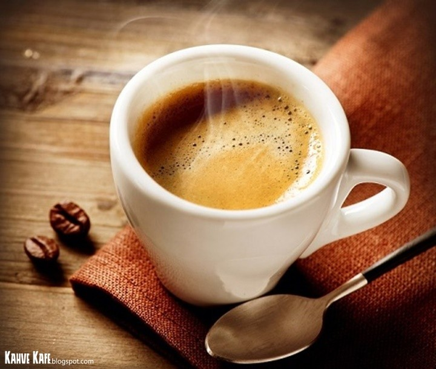

Café Espresso
Café espresso é um método de preparo de café italiano que consiste em passar água quente sob alta pressão por grãos de café moídos. O resultado é uma bebida concentrada, com sabor e aroma intensos.

Café Doppio
Café doppio é um espresso duplo, ou seja, uma bebida preparada com o dobro da quantidade de café utilizada no espresso tradicional. É uma bebida intensa, encorpada e com sabor marcante.
